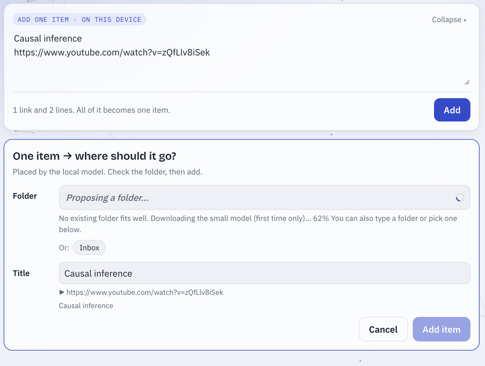

On-device AI
Two AI models, running in a browser tab.
Paste a link or a page of notes, and Stacks files it in the right folder. When nothing fits, a small language model proposes a new one. Nothing you paste leaves your device.
- Retrieval, then generation. An embedding model ranks your folders and recent items. That ranking guides what the language model sees.
- GPU first. Uses WebGPU when available, and falls back to multi-threaded WebAssembly on the CPU.
- Made fast. The model loads while you type and pre-reads its prompt, so the first suggestion takes about 9 s on a laptop CPU instead of 37 s.
- Always well-formed. A grammar constrains the output, so the model can only answer as
Area › Subfolder.
